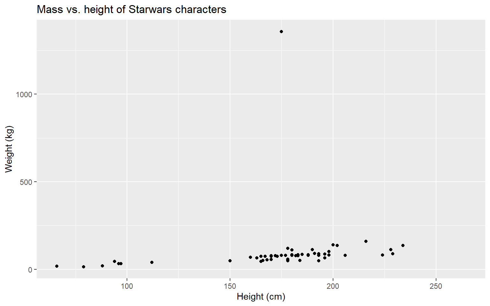

12 Data visualization
12.1 Data visualization
“The simple graph has brought more information to the data analyst’s mind than any other device.” — John Tukey
- Data visualization is the creation and study of the visual representation of data
- Many tools for visualizing data – R is one of them
- Many approaches/systems within R for making data visualizations – ggplot2 is one of them, and that’s what we’re going to use
12.3 ggplot2
- ggplot2 is tidyverse’s data visualization package
-
ggin “ggplot2” stands for Grammar of Graphics - Inspired by the book Grammar of Graphics by Leland Wilkinson
12.4 Grammar of Graphics
A grammar of graphics is a tool that enables us to concisely describe the components of a graphic
12.5 Mass vs. height
ggplot(data = starwars, mapping = aes(x = height, y = mass)) +
geom_point() +
labs(title = "Mass vs. height of Starwars characters",
x = "Height (cm)", y = "Weight (kg)")
#> Warning: Removed 28 rows containing missing values
#> (geom_point).
12.6 Questions
- What are the functions doing the plotting?
- What is the dataset being plotted?
- Which variables map to which features (aesthetics) of the plot?
- What does the warning mean?+
ggplot(data = starwars, mapping = aes(x = height, y = mass)) +
geom_point() +
labs(title = "Mass vs. height of Starwars characters",
x = "Height (cm)", y = "Weight (kg)")
#> Warning: Removed 28 rows containing missing values
#> (geom_point).12.7 Hello ggplot2!
-
ggplot()is the main function in ggplot2 - Plots are constructed in layers
- Structure of the code for plots can be summarized as
ggplot(data = [dataset],
mapping = aes(x = [x-variable], y = [y-variable])) +
geom_xxx() +
other options- The ggplot2 package comes with the tidyverse
- For help with ggplot2, see ggplot2.tidyverse.org